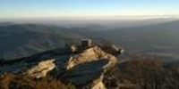
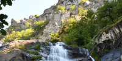
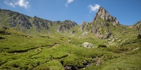

Le Caroux

Le mont Caroux constitue la terminaison orientale des monts de l'Espinouse, au cœur du parc naturel régional du Haut-Languedoc. Il est constitué par un plateau culminant à 1 091 m d'altitude, et limité à l'ouest par les gorges d'Héric, à l'est par les gorges de Colombières et au sud par la vallée de l'Orb.
L'ensemble formé par le massif du Caroux et les gorges d'Héric, situé sur les communes de Rosis, Colombières-sur-Orb, Saint-Martin-de-l'Arçon, Mons-la-Trivalle et Cambon-et-Salvergues, est un site classé2.
Massif gneissique très escarpé, il se prête parfaitement à la pratique de la randonnée, parfois sportive, et à l'escalade d'altitude. Son plateau est recouvert de landes de genêts à balais et de callunes.
Les milles marches

Explorez cet itinéraire en boucle de 5,3-km près de Fraisse-sur-Agout, Hérault. Ce parcours est généralement considéré comme difficile. C’est un itinéraire populaire pour l'ornithologie, la randonnée et la balade, mais vous pourrez quand même profiter de certains moments de tranquillité.
Le sentier des 1 000 marches, dans le Parc naturel régional du Haut-Languedoc, vous permettra de découvrir la belle et haute cascade du Saut de Vésoles, et d'avoir de magnifiques points de vue sur le lac de Vésoles. Le lac est un plan d'eau de barrage, alimenté par le ruisseau du Bureau, qui a été créé suite à la construction du barrage en 1956.
Le pic de Madrès

Le pic de Madrès (prononcé localement [madʁ]) est un sommet des Pyrénées françaises, situé en région Occitanie à cheval sur le département de l'Aude, dont il est le point culminant (commune du Bousquet), et les Pyrénées-Orientales (communes de Sansa et Mosset), à proximité de l'Ariège, distante de moins de 3 km par le petit terroir du Donezan. Le pic de Madrès est le plus haut sommet du massif du même nom.